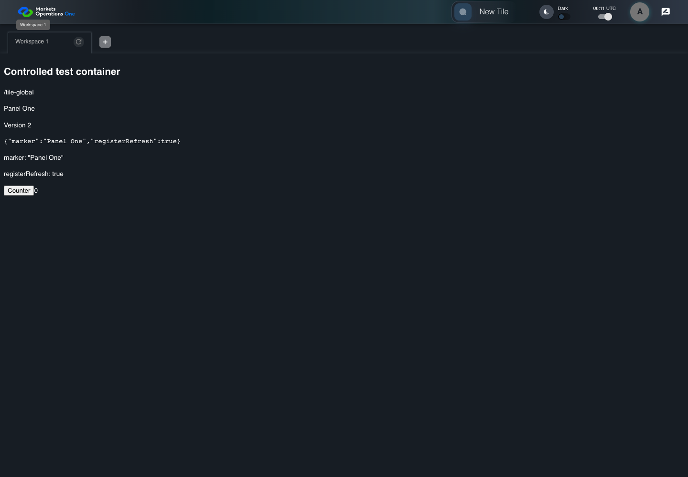

UI-SHL-022 refresh data without adding a workspace
PASS · application/run-050/ui-shl-022-refresh-data-without-adding-a-workspace-9a52924e364f-attempt-1 · ACTUAL_APPLICATION_LOCAL_SERVICES
Actual current React shell and browser storage. Controlled login/validation/activity renewal, UI-USER-01 permissions, catalog, and SystemJS React component. Markers, counter, and registered refresh callback are controlled fixture observations. No real business tenant or BFF authorization acceptance.
2026-10-22T06:11:10.045Z to 2026-10-22T06:11:12.410Z
Assertions and result · Artifact manifest · Exact run inputs and source hashes
Result SHA-256:eeaf09f3c15d55cc9fdbabe29e154b9a8863f5144478a9311d029458cd821933Screenshot capture: CAPTURED. Named frames: 7.
Step screenshot evidence: COMPLETE. 6/6 canonical steps have execution screenshots.
Canonical step timeline
Given User A is authenticated as fixture UI-USER-01 with the case-specific permissions
Execution: PASSED.
1. step-01 Visible state after step 1: Given User A is authenticated as fixture UI-USER-01 with the case-specific permissions
2026-10-22T06:11:10.977Z · 1440×1000
Step: /Users/lushevol/code/github/ratan-release-impact/workbench/tasks/ui-test-coverage-20261022/test-cases.md:6062
SHA-256:365bc064ef8cf5c078cc86e5b2ea3862073c96c42997e29e292354516d2ec559And W1 refresh callback changes visible data from Version 1 to Version 2
Execution: PASSED.2. step-02 Visible state after step 2: And W1 refresh callback changes visible data from Version 1 to Version 2
2026-10-22T06:11:11.840Z · 1440×1000
Step: /Users/lushevol/code/github/ratan-release-impact/workbench/tasks/ui-test-coverage-20261022/test-cases.md:6063
SHA-256:8cbaf33cf41315048ac7dd84a5205cdb8ff46fc82a26f23dce1120f980296b2bWhen User A clicks icon button named "refresh" inside the W1 workspace tab
Execution: PASSED.3. step-03 Visible state after step 3: When User A clicks icon button named "refresh" inside the W1 workspace tab
2026-10-22T06:11:11.940Z · 1440×1000
Step: /Users/lushevol/code/github/ratan-release-impact/workbench/tasks/ui-test-coverage-20261022/test-cases.md:6064
SHA-256:0bda2a408c2d7602e3203ef39f33297ead8d4c005729c417d5ac3800dd7bceadThen text with text "Version 2" inside the W1 tabpanel is visible
Execution: PASSED.
4. step-04 Visible state after step 4: Then text with text "Version 2" inside the W1 tabpanel is visible
2026-10-22T06:11:11.990Z · 1440×1000
Step: /Users/lushevol/code/github/ratan-release-impact/workbench/tasks/ui-test-coverage-20261022/test-cases.md:6065
SHA-256:0bda2a408c2d7602e3203ef39f33297ead8d4c005729c417d5ac3800dd7bceadAnd the tab count inside the tablist named "workspaces" equals its recorded pre-action count
Execution: PASSED.
5. step-05 Visible state after step 5: And the tab count inside the tablist named "workspaces" equals its recorded pre-action count
2026-10-22T06:11:12.039Z · 1440×1000
Step: /Users/lushevol/code/github/ratan-release-impact/workbench/tasks/ui-test-coverage-20261022/test-cases.md:6066
SHA-256:f28078a86855d990273d8ccea34c54345db5496f7fe03b7fd0c400111eaafea1And tab with source identity "Workspace Name textbox value Workspace 1" inside the shell tablist named "workspaces" is selected
Execution: PASSED.
6. step-06 Visible state after step 6: And tab with source identity "Workspace Name textbox value Workspace 1" inside the shell tablist named "workspaces" is selected
2026-10-22T06:11:12.104Z · 1440×1000
Step: /Users/lushevol/code/github/ratan-release-impact/workbench/tasks/ui-test-coverage-20261022/test-cases.md:6067
SHA-256:f28078a86855d990273d8ccea34c54345db5496f7fe03b7fd0c400111eaafea1
Additional named frames

The final visible state after the named test assertions.
2026-10-22T06:11:12.171Z · 1440×1000Step: Test source: /Users/lushevol/code/github/ratan-release-impact/workbench/e2e/audit-specs/shell-expanded.spec.ts:125
SHA-256:
f28078a86855d990273d8ccea34c54345db5496f7fe03b7fd0c400111eaafea1Screenshots establish visible state only. Assertions and traces support functional claims.